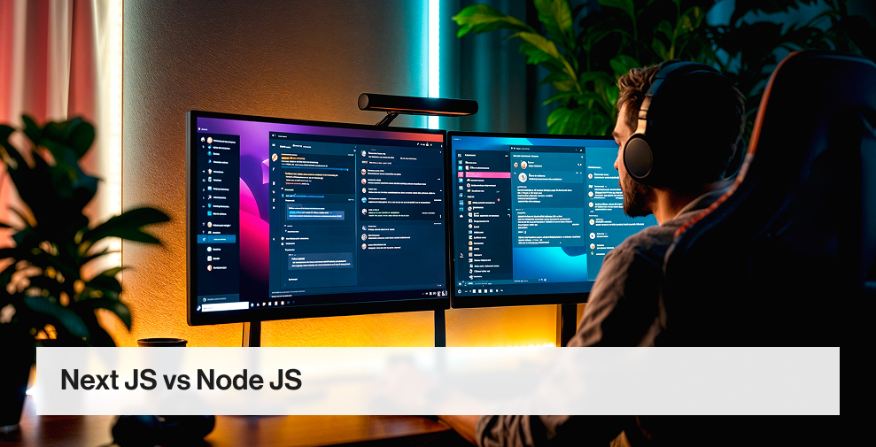

Introduction:
Developing a framework holds a great place in the development world, allowing businesses to develop scalable solutions that give their business a competitive edge. Therefore, choosing a reliable framework makes a difference. As we dig into 2024, Next.js and Node.js stand out. With each delivering the best, which can be the right choice for you? This begins the battle of Next.js vs Node.js.
Each model comes with a set of capabilities and advantages that address different development needs and preferences. Whether it is picked by dominating market players to impressive features, both have filled the top place in every go.
To help you make the right choice, we have prepared a dedicated blog that compares Next JS and Node JS to give you the best solution to empower cutting-edge development.
Table of Contents
- Introduction:
- What is Next.js?
- Advantages of Next.js
- Disadvantages of Next.js
- Key Features of Next.js
- Top Companies that Use Next.js
- What is Node.js?
- Advantage of Node.js
- Disadvantage of Node.js
- Key Features of Node.js
- Top Companies that Use Node.js
- Head-to-Head Differences between Next JS vs Node JS
- Node JS vs Next JS: Comparison Table
- Next JS vs Node JS: Which is the right framework in 2025?
- Conclusion Frequently Asked Questions
What is Next.js?
Next.js is a free and open-source framework for building server-side applications. It has been in the market for several years and offers an all-inclusive toolbox for building fast, scalable, and practical web applications.
After that, Next.js uses the standards for building web applications. It follows and supports almost every implementation technique, thus making it a flexible framework for developers. According to a report, Next.Js is popular among more than 36% of developers across the globe.
On top of that, Next.Js also seamlessly integrates with React to create marvellous single-page applications.
Advantages of Next.js
1. Server-Side Rendering
It also allows for server-side rendering by default and is optimised for performance and SEO.
2. Automatic Code Splitting
It will automatically split up the code bundles to ensure they are loaded efficiently and improve user experience.
3. Enhanced SEO
With server-side rendering support, Next.js allows for better search engine indexing and ranking.
Disadvantages of Next.js
1. Learning Curve
In contrast with React, Next.js has a steeper learning curve for those unfamiliar with server-side rendering concepts.
2. Limited Flexibility
In some complex applications, the strongly opinionated architecture of Next.js may restrict flexibility when compared to React custom solutions.
Key Features of Next.js
1. Built-in Server-Side Rendering
Next.js makes server-side rendering a breeze with inbuilt support, rendering unnecessary complex configurations.
2. Automatic Code Splitting
It will automatically split up the code bundles to ensure they are loaded efficiently and improve user experience.
3. Static Site Generation
Speeding up the site will be achieved by adding static site generation, i.e., producing pre-rendered pages for a better user experience.
Top Companies that Use Next.js
- Netflix
- Hulu
- TikTok
What is Node.js?
Node.js is an open-source, cross-platform, JavaScript runtime environment that can be run on Linux, Windows, Unix, macOS, and other operating systems. This famous framework is based on the V8 Javascript engine outside a web browser. It allows the developers to make code for a server side.
Node Js is an environment where Javascript code is executed. 42.73% of professional app developers favour popular Node JS frameworks, libraries, tools, and IDEs.
Regarding the development of both iOS and Android, Node.js plays the role of an event-driven, non-blocking IO model, which makes it very suitable for real-time, data-intensive applications.
To go for a top notch development with Node Js, it is ideal to count on Node.Js development company in the USA.
Advantage of Node.js
1. Asynchronous and Event-Driven
Node.js uses non-blocking I/O operations. Therefore, it can manage concurrent requests more efficiently and utilise the resources best.
2. Large Ecosystem
Libraries and frameworks are numerous, and this ecosystem is vast. Developers can create various applications that range from web servers to microservices.
3. Scalability
Node architecture of Node.js enables applications to handle high loads by scaling horizontally.
Disadvantage of Node.js
1. Callback Hell
In the case of complex asynchronous operations, the callback management creates callback hell, which makes maintenance and debugging of the code hard.
2. Not Suitable for CPU-Intensive Tasks
Being a single-threaded process, Node.js might not be the best option for CPU-intensive tasks as it could result in the blocking of the event loop and, consequently, hammer down the performance.
Key Features of Node.js
- Event-driven architecture based on the V8 JavaScript Engine.
- Support for APIs building, web servers, real-time applications, and microservices.
- Cross-platform support for mobile application deployment on different operating systems.
Top Companies that Use Node.js

- PayPal
- Netflix
Head-to-Head Differences between Next JS vs Node JS
Next JS or Node JS are two key frameworks in web development each with great features to develop world class web apps. Here we have put across critical difference between Next JS and Node JS to help you with right choice:
#1. Performance
To choose between Next.js and Node.js, it is essential to consider performance to make an ideal choice. Next.js is peerless regarding performance, especially when rendering things on the server. With rendering pages on the server and shipping HTML to the clients, Next.js reduces TTFB and enhances perceived performance, leading to SEO improvement and enhanced user experience.
On the other hand, Node.js does perform especially in I/O heavy tasks compared to Next.js, because of its asynchronous and event-driven nature. It helps create a scalable network capable of handling multiple concurrent connections.
Winner: Next.Js
#2. Scope
The prime scope of Next.js is that it is a React framework focused mainly on client-side rendering and server-side rendering. It automates React app development with integrated components such as server-side rendering, routing, and state management.
Whereas, Node.js is a JavaScript runtime environment for server-side code. Express being cross-platform means it can be used to create applications like web servers, APIs, real-time applications, and microservices, among other types.
Winner: Next.Js
#3. Functionality
Next.js is an advanced functionality framework specialised for building state-of-the-art web applications with React in mind. It offers server-side rendering, code splitting, routing, and state management out-of-the-box, making the development process less cumbersome.
In contrast, Node.js can do more things than server-side rendering may accomplish. It provides the runtime environment for server-side JavaScript code execution, making it possible to build web servers, APIs, real-time communication, etc.
Winner: Node.Js
#4. Server-Side Rendering
Next.js is highly respected for its server-side rendering feature that allows for rendering React components on the server and sending HTML to the client. This strategy helps to enhance the performance, SEO and initial page load times, which eventually leads to user’s satisfaction.
Whereas, Node.js itself does not feature server-side rendering by default. However, server-side rendering is achievable by programmers through frameworks like Express.j5 and libraries such as React with ReactDOMServer.
Winner: Next.Js
#5. Routing System
The built-in routing system of Next.js provides an ease of navigation through applications. File-based routing helps developers define routes imperatively, ensuring code organisation and maintainability.
On the other hand, Node.js does not provide a built-in routing system. However, developers can take advantage of routing frameworks, like Express.js, that have strong routing features to create web servers and APIs.
Winner: Next.Js
#6. Learning Curve
Learning curve is another differentiating factor for Node.JS vs Next.JS. Next.Js learning curve is low, especially for developers with previous experience with React. Nevertheless, getting server-side rendering concepts and Next. Js-specific features might take more time and effort.
However, Node.js doesn’t have a steep learning curve, especially for developers familiar with JavaScript. In this regard, one of the main advantages is that Node.js is mostly a runtime environment for running JavaScript code server-side, allowing developers to begin quickly with the language they already know.
Winner: Next.Js
#7. Community Support
Community support comes as an important factor to witness the battle of Next.js vs Node.JS. Next.js has a blossoming community of developers and contributors, with vibrant forums, documentation, and tutorials that help developers throughout their journey.
Whereas, Node.js offers a large and mature community with abundant support and resources, which has made it one of the most popular and well-supported platforms for web development.
Winner: Node.Js
#8. File Structure and Code Organization
Next.js utilises a well-defined file organisation and code separation, which ensures that projects are easily organised and maintained. It uses a convention-based file structure approach, increasing project maintainability and scalability.
Whereas, Node.js is agnostic with respect to file or code organisation. Nodejs Developers can structure their projects as they see fit.
Winner: Next.Js
Node JS vs Next JS: Comparison Table
| Basis | Next.js | Node.js |
|---|---|---|
| Framework/Runtime | The Next.js framework is built on Node.js and uses React for building client-server applications. | Node.js is a server-side JavaScript runtime environment that allows you to execute JavaScript code. |
| Routing | A file-based routing method defines routes based on the structure of files. | The routing code requires additional libraries or frameworks, such as Express.js. |
| Static Site Generation | Provides support for creating static sites, so you can pre-render pages at build time. | A static site can be created using NodeJs, but special setup and tooling are required. |
| Community Support | Strong | Very Strong |
| SEO | SSR and SSG are built-in to improve SEO. | Implementing SSR or SSG manually is necessary for SEO optimization. |
| Learning Curve | Learning curve is relatively low, particularly for React developers. | The server-side concepts pose a higher learning curve for beginners, particularly for those just getting started. |
Next JS vs Node JS: Which is the right framework in 2025?
By 2024, deciding on the right framework between Node.JS vs Next.JS will depend entirely on your project's specific requirements and goals.
Next.js is the best option for projects that prefer both the client-side and server-side rendering because it has built-in server-side rendering support, automatic code splitting, and an efficient routing system.
It performs well in performance boosting, SEO, and user experience, particularly for applications with dynamic content and frequent updates.
However, Node.js itself is a flexible choice for many types of applications apart from rendering, such as web servers, APIs, real-time communication and microservices.
It provides a wide set of libraries and frameworks, scalability, and cross-platform support, and is thus suitable for many scenarios.
Finally, make a comparative analysis of your project's requirements, development preferences, and scalability needs to decide between Next.js vs Node.JS to choose the right framework for you.
Conclusion
Both Next.js and Node.js have their own strengths and address different parts of web development. If you are looking to develop web app development with Next JS and Node JS, Manek Tech team is here to assist with the team of developers from India retaining the potential to develop powerful feature rich applications.
No more struggles for integrating top notch features in the applications, Hire Nodejs Developers from India from Manek Tech today and never let any gaps hamper your web application idea.
Contact us today and chase the dream of world class development with our cutting edge JavaScript Development Services.